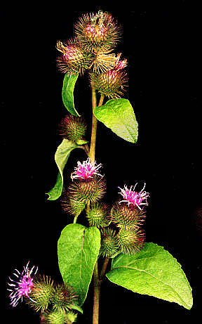

La bardane (arctium lappa), appelée couramment gratteron, bouillon noir, oreille de géant ou herbe aux teigneux est une plante bisannuelle très commune qui pousse dans les terrains vagues, les décombres ou le bord des chemins ; elle appartient à la famille des composées.
Cette plante qui peut approcher les 2 m de haut, possède une racine pivotante fusiforme charnue, brune à l'extérieur et blanchâtre dedans.
Sa robuste tige cylindrique est bien ramifiée et duveteuse.
Les feuilles alternes très larges, souvent en forme de cœur à la base de la tige, sont entières , avec des bords ondulés, vertes sur le dessus et gris argenté en dessous.
Les petites fleurs tubulaires rouge-violacé sont réunies en capitules dont les nombreuses bractées pointues sont disposées en globe et terminées par des crochets recourbés à l'extérieur.
Les fruits secs qui se forment ensuite sont munis d'eue aigrette.
Qui ne s'est pas amusé à jeter ces boules qui s'accrochent si facilement aux habits et, problème plus délicat, aux cheveux !
Ces fruits munis de très nombreux petits crochets sont à l'origine de l'invention du velours-crochet, plus simplement nommé scratch, par le suisse Georges de Mestral en 1951.
Aucun problème par contre, pour multiplier la bardane, elle se ressème très facilement.
Dans certains pays, on cultive cette plante pour consommer des jeunes feuilles en salade et sa racine à la manière des salsifis.
Par contre, les vertus médicinales de la bardane sont universellement reconnues, elle est diurétique, dépurative, cholérétique, antiseptique et hypoglycémiante. Elle est donc utilisée notamment chaque fois où l'on doit stimuler le fonctionnement du foie ou des reins et en association avec un traitement du diabète.
En usage externe, elle soigne toutes les maladies de la peau, le suc calme les piqûres de guêpe.